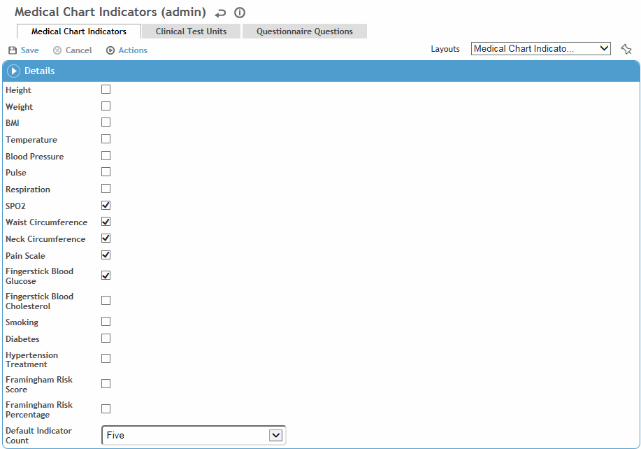

You can select the default risk indicators to be tracked in the Medical Chart module: these can include medical chart indicators (such as such as vital signs), clinical test results, and answers to particular questions. The items that you select will display on the Indicators tab of the employee’s Medical Chart.

In the Administrator menu, click Risk Indicators.
The risk indicators apply to all employees (this overwrites any indicators that you have defined for specific employees, but in the employee’s medical chart you can select additional indicators; see Indicators Tab).
On each of the tabs (Medical Chart Indicators, Clinical Test Units, and Questionnaire Questions), select the indicators, tests, and questions that you want to be displayed. If you do not see the items you want, use the “add” shortcut; see Adding New Records).
On the Medical Chart Indicators tab, select the Default Indicator Count to identify the number of instances of each type that should appear. For example, if you select 10, the form will display up to 10 instances of a result.
Units of measure (temperature, height, weight) are set in the system settings.
The Framingham Risk Score and Percentage indicators are only displayed if other functionality is enabled and all fields are completed in the Other Vitals section of the Clinic Visit record; contact your system administrator for more information.
When you are finished making your changes, click Save.
Users of the Medical Chart module will not be able to remove these indicators, but they can add other indicators for a particular employee.